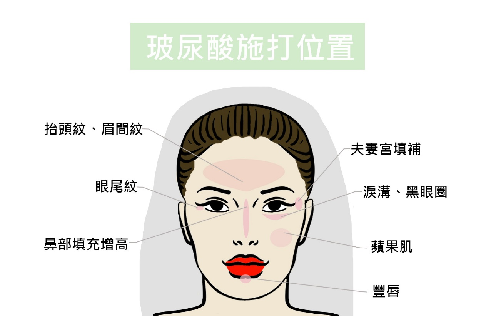

玻尿酸本來就存在於人體之中，是重要的保濕成分，只是因為年齡的增長而漸漸流失，使得肌膚出現皺紋、鬆弛甚至是凹陷。
由於玻尿酸具有黏容性與伸縮性，所以被廣泛運用在微整形這一塊，除了填補凹洞、皺紋之外，用作於豐頰、豐唇、下顎、甚至是笑紋及口周圍的細紋、或是修飾臉形輪廓都有不錯的口碑；玻尿酸最大的優點就是治療迅速、立即見效，注射之後使肌膚變得飽滿平坦，讓臉部重拾青春的水潤姿態！
玻尿酸有三種大小不同的分子狀態：
大分子施打於真皮層下方以及骨膜，專攻大面積的部位，多為填充定型之作用；
中分子施打於真皮層下層或脂肪層， 除了填充凹陷，除皺也是功效之一；
小分子的玻尿酸則是注射在真皮層上層，撫平皺紋的同時也達到補水的目的。
1. 注射後24小時內要擦藥並保持傷口清潔衛生。
2. 一個月內加強注射部位的保濕。
3. 有服用阿斯匹靈或其他抗凝血之藥物，請主動告知醫生。
4. 無針痕之後就能上妝，卸妝時要將力道放輕。
5. 大力觸碰按或摩注射區域、長時間暴露在過冷、過熱、強熱光源的地方都會加速玻尿酸的分解。